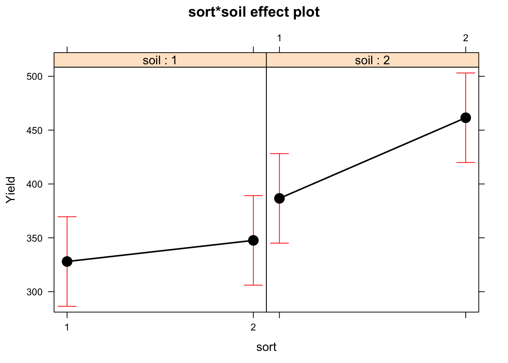
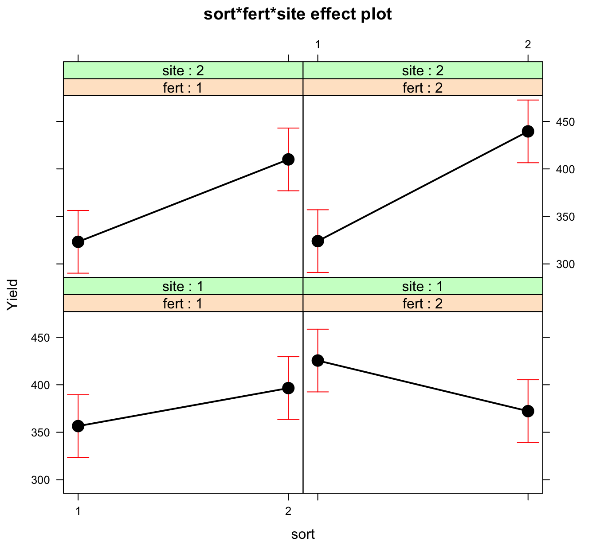

Exercise Five
Ex-1: Data from the NSR education test, revisited
Follow up Ex-2 from last week by performing a Tukey test for all pair wise comparisons with overall (family-wise) error rate 5%. Give a summary of the results.
Anova Table (Type III tests)
Response: Science
Sum Sq Df F value Pr(>F)
(Intercept) 1600.5 1 1557.591 < 0.00000000000000022 ***
Age 224.8 4 54.698 < 0.00000000000000022 ***
Residuals 10270.5 9995
---
Signif. codes: 0 '***' 0.001 '**' 0.01 '*' 0.05 '.' 0.1 ' ' 1
Simultaneous Confidence Intervals and Tests for General Linear Hypotheses
Multiple Comparisons of Means: Tukey Contrasts
Fit: lm(formula = Science ~ Age, data = NSRdata)
Quantile = 2.7283
Minimum significant difference = 0.1567
95% confidence level
Linear Hypotheses:
Lower Center Upper Std.Err t value P(>t)
1-13 0.04545 0.20212 0.35879 0.05742 3.520 0.00397 **
1-16 -0.01827 0.13839 0.29506 0.05742 2.410 0.11263
1-19 0.10789 0.26456 0.42123 0.05742 4.607 0.000040626 ***
1-30 -0.34661 -0.18994 -0.03327 0.05742 -3.308 0.00838 **
13-16 -0.22040 -0.06373 0.09294 0.05742 -1.110 0.80148
13-19 -0.09423 0.06244 0.21911 0.05742 1.087 0.81318
13-30 -0.54873 -0.39206 -0.23540 0.05742 -6.828 < 0.0000000000000002 ***
16-19 -0.03050 0.12617 0.28284 0.05742 2.197 0.18077
16-30 -0.48500 -0.32834 -0.17167 0.05742 -5.718 0.000000111 ***
19-30 -0.61117 -0.45450 -0.29783 0.05742 -7.915 < 0.0000000000000002 ***
---
Signif. codes: 0 '***' 0.001 '**' 0.01 '*' 0.05 '.' 0.1 ' ' 1
(Adjusted p values reported -- single-step method)
WARNING: Unbalanced data may lead to poor estimatesThe anova table indicates a clear significance of Age-group with regard to the interest level to Science subjects. hence, at least two age-groups are have significantly different expected means. We can use the Tukey test to identify pairwise differences.
The Tukey output provides differences in mean (column “center”) between all pairs of groups, and at the top of output the minimum difference yielding a significant difference in means is given to be 0.1567. That is, all age-groups with a difference in averages of more than 0.1567 are significantly different, according to Tukey. From the p-values we observe that 6 out of 10 pairs are significantly different, and the largest difference is found between age groups 30+ and 19-29.
Tukey's HSD
Alpha: 0.05
Mean G1 G2 G3
30 3.333151 A
1 3.143210 B
16 3.004815 B C
13 2.941086 C
19 2.878647 CThe compact letter display gives a grouping of the similar levels, and there are three groups of levels that are internaly non-significantly different. 30+ is different from all other levels, whereas 1-12 and 16-19 are similar and 16-19, 13-15 and 19-29 are also similar.
Ex-2:
In barley.rdata are results from an experiment where the response is yield of barley pr 1000 square meter, and the factors sorts of barley, soil types, types of fertilizers. In addition was the experiment done in two different geographical areas (sites).
- Assume a two factor model including the main effects of
sortandsoiland their interaction. State the model and explain all parameters under a sum-to-zero parametrization.
The model can be written as:
\[ y_{ijk} = \mu + \alpha_i + \beta_j + (\alpha\beta)_{ij} + \epsilon_{ijk}\]
where, \(\epsilon \sim N(0, \sigma^2)\)
The parametrization restrictions for “sum-to-zero”" are:
\[ \begin{aligned} \sum_i{\alpha_i} = 0, & \sum_j{\beta_j} = 0, & \sum_{i}{(\alpha\beta)_{ij}} = 0 \text{ and } \sum_{j}{(\alpha\beta)_{ij}} = 0 \end{aligned} \]
- Fit the model in R and estimate all parameters
Estimate Std. Error t value
(Intercept) 380.9375 10.14459 37.550810
sort(1) -23.6250 10.14459 -2.328828
soil(1) -43.1250 10.14459 -4.251035
sort(1):soil(1) 13.8125 10.14459 1.361563
Pr(>|t|)
(Intercept) 0.0000000000000000000000001697412
sort(1) 0.0273106534545246339151791659106
soil(1) 0.0002136381228279022985450108507
sort(1):soil(1) 0.1841919639706707523263418124770[1] 3293.205From the model summaries we find the estimated parameters to be:
- The estimated overall mean yield: \(\hat{\mu} = 380.94\)
- The estimated effects of sort 1 and 2: \(\hat{\alpha}_1=\) -23.625, \(\hat{\alpha}_2 = -\hat{\alpha}_1 =\) 23.625
- The estimated effects of soil 1 and 2: \(\hat{\beta}_1=\) -43.125, \(\hat{\beta}_2 = -\hat{\beta}_1 =\) 43.125
- The estimated interaction effects of sort and soil: \(\hat{\alpha\beta}_{11}=\) 13.8125, \(\hat{\alpha\beta}_{12}=-\hat{\alpha\beta}_{11}\) -13.8125, \(\hat{\alpha\beta}_{21}=-\hat{\alpha\beta}_{11}\) -13.8125, \(\hat{\alpha\beta}_{22}=-\hat{\alpha\beta}_{21}=-\hat{\alpha\beta}_{12}=\) 13.8125
- The estimated within
sort:soillevels unexplained variability: \(\hat{\sigma}^2=MSE=\) 3293.21
- Make an interaction plot and try to conclude about the presence of interaction from the plot. How would you explain interaction effect in this example for a person with experience in agriculture, but minimal statistical experience?

From the plot, it seems that a farmer can expect an increase in yield when using sort 2 instead of sort 1 for both types of soil, and there may be a higher gain of sort 2 over sort 1 for soil-type 2 than for soil type 1. If this is so, there is a so-called interaction effect of sort and soil on yield.- Perform a hypothesis test for the interaction effect. Conclusion?
Anova Table (Type III tests)
Response: Yield
Sum Sq Df F value Pr(>F)
(Intercept) 4643628 1 1410.0633 < 0.00000000000000022 ***
sort 17861 1 5.4234 0.0273107 *
soil 59513 1 18.0713 0.0002136 ***
sort:soil 6105 1 1.8539 0.1841920
Residuals 92210 28
---
Signif. codes: 0 '***' 0.001 '**' 0.01 '*' 0.05 '.' 0.1 ' ' 1The interaction between soil and sort is insignificant (high p-value). This result indicates that the slight non-parallel tendency of the lines in the interaction plot may be due to random errors. More data would be needed to verify any interaction effect.
- Fit a four factor model with sort, soil, fert and site as factors and with all possible 2-factor, 3-factor and 4-factor interactions. Use
Anova()from the car-package with argumenttype="III"to produce an ANOVA table. Type III means that all factors are tested as if they were the last factor to be added to the model. Are there any higher order significant effects? Compare the R-squared and the adjusted R-squared values. What can you conclude from these?
Anova Table (Type III tests)
Response: Yield
Sum Sq Df F value Pr(>F)
(Intercept) 4643628 1 4503.1850 < 0.00000000000000022 ***
sort 17861 1 17.3203 0.0007350 ***
soil 59512 1 57.7126 0.000001077 ***
fert 2813 1 2.7274 0.1181247
site 1458 1 1.4139 0.2517578
sort:soil 6105 1 5.9205 0.0270667 *
sort:fert 2080 1 2.0172 0.1747174
soil:fert 33930 1 32.9039 0.000030638 ***
sort:site 23220 1 22.5178 0.0002195 ***
soil:site 595 1 0.5771 0.4584890
fert:site 105 1 0.1019 0.7536381
sort:soil:fert 2245 1 2.1766 0.1595290
sort:soil:site 1405 1 1.3620 0.2602870
sort:fert:site 7442 1 7.2169 0.0162162 *
soil:fert:site 12 1 0.0121 0.9136995
sort:soil:fert:site 406 1 0.3938 0.5391407
Residuals 16499 16
---
Signif. codes: 0 '***' 0.001 '**' 0.01 '*' 0.05 '.' 0.1 ' ' 1[1] 0.9060891[1] 0.8180477There is only one interaction effect significant at 5% levels, namely the sort:fert:site interaction. However, the least squares estimator is prone to inflated variance estimates and difficulties in finding significance when the number of variables k rises compared to the number of observations N and if variables are highy correlated. To many variables to estimate from a limited number of observations leaves few degrees of freedom to SSE, and tests with low power. Lack of significance may be an over-fitting problem. By removing some of the least significant variables, the problem is reduced, and a reduced model with significant effects may be identified.
The large difference between \(R^2\) and \(R_{adj}^2\) is also an indication of an over-fitted model.
- Fit also a reduced model without site, but all other effects up to 3rd order interactions. Perform a partial F-test with the
anova()function to test whether site (and all its interactions with the others) should be excluded from the model (See also Exercise set 3 and Ex-3).
Analysis of Variance Table
Model 1: Yield ~ sort * soil * fert * site
Model 2: Yield ~ sort * soil * fert
Res.Df RSS Df Sum of Sq F Pr(>F)
1 16 16499
2 24 51142 -8 -34644 4.1995 0.007068 **
---
Signif. codes: 0 '***' 0.001 '**' 0.01 '*' 0.05 '.' 0.1 ' ' 1The anova result for partial F-test shows that site is needed to a certain degree in the model. The low p-value reject the hypothesis that there is no effect of site on Yield.
- In the
mixlm-package there are convenient functions for performing automatic model selection by eitherbackward()elimination of factors from a “full-model, byforward()addition of factors from a minimal model with only intercept, or a combinedstepwise()function which combines both forward and backward addition/elimination.
For the backward function the least significant factor is removed from the model in each step if the p-value is larger than testlevel alpha. If all factors are significant at any step, the procedure stops. The elimination obeys the so-called marginality principle (hierarchy of factors) which states that any lower order effect or interaction should not be removed from the model if it is part of a higher order significant interaction. This is a good principle for practical data analysis.
Try to run the backward() function on the model object you created above with all four factors and interactions. Use alpha=0.05 as test level. Use the Step-information from the output to explain which factors being excluded at each step. What is the final reduced model?
Backward elimination, alpha-to-remove: 0.05
Full model: Yield ~ sort * soil * fert * site
<environment: 0x7fb20182cf78>
Step RSS AIC R2pred Cp F value Pr(>F)
sort:soil:fert:site 1 16905 230.63 0.65906 14.394 0.3938 0.5391
soil:fert:site 2 16918 228.65 0.69566 12.406 0.0126 0.9120
sort:soil:site 3 18322 229.20 0.70418 11.768 1.4944 0.2373
soil:site 4 18917 228.23 0.72435 10.345 0.6171 0.4418
sort:soil:fert 5 21162 229.81 0.72031 10.522 2.3730 0.1391In the first step, the 4th order interaction is removed. In 2nd, 3rd and 4th step some 3rd order and a 2nd order interactions are removed. After removing interaction between sort,soil and site in the 5th step, the resulting model is,
Yield ~ sort + soil + fert + site + sort:soil + sort:fert + soil:fert +
sort:site + fert:site + sort:fert:site- Fit the reduced model and perform a model check using residual analysis.
The backward function has fitted the reduced model (her named mod4):

The residual plots give no evidence of any problems with the model assumptions.
- Make an interaction effects plot using the following code:

Try to explain the plot. Why do you think the interaction between sort, fertilizer and site was significant?
The plot shows that, when changing sort from 1 to 2, a farmer can expect different change in average Yield for site:1 and site:2 and the difference is not same when using fertilizer:1 and fertilizer:2.